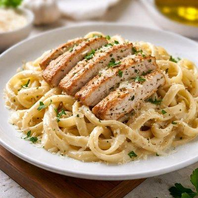
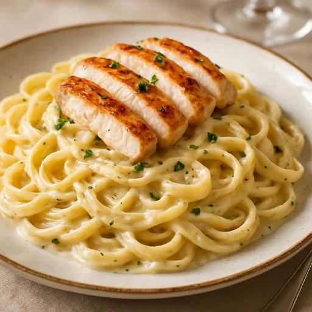
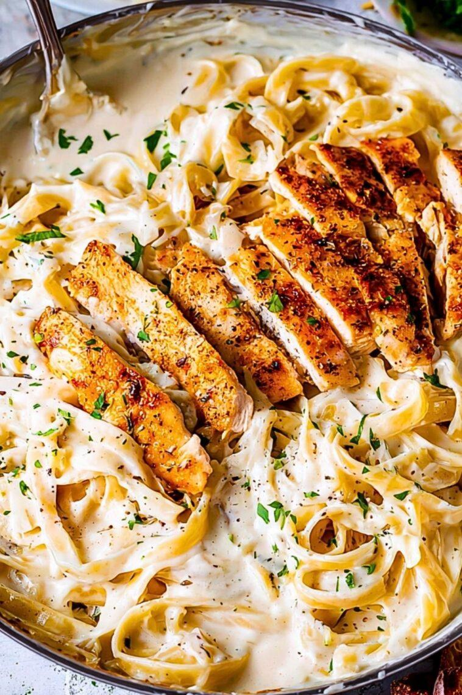

Chicken Alfredo Pasta
Creamy pasta combined with tender chicken, Parmesan cheese, garlic, and a rich Alfredo sauce.
Prep time:10 minutes
Cook time:10 minutes
Total time:10 minutes
Servings:10 minutes
Ingredients
- 2 chicken breasts
- 8 oz (225 g) fettuccine pasta
- ¾ cup freshly grated Parmesan cheese
- 2 cups milk
- ½ cup heavy whipping cream
- 1 tbsp olive oil
- 1 large garlic clove, minced
- ½ tsp Italian seasoning
- ½ tsp garlic salt
- Salt to taste
- Black pepper to taste
- Fresh parsley for garnish
Instructions
- Cut the chicken breasts into small pieces.
- Season the chicken with salt, pepper, and Italian seasoning.
- Heat olive oil in a large pan over medium heat.
- Add the chicken and cook until browned and fully cooked.
- Remove the chicken and set it aside.
- Add minced garlic to the same pan and cook for about 30 seconds.
- Add milk and heavy cream.
- Bring the mixture to a gentle simmer.
- Add the fettuccine.
- Cook the pasta until tender, stirring occasionally so that it doesn't stick.
- Add the cooked chicken back into the pan.
- Gradually add Parmesan cheese while stirring.
- Continue stirring until the cheese melts and the sauce becomes creamy.
- Season with salt and black pepper.
- Garnish with fresh parsley and additional Parmesan.



Home Page